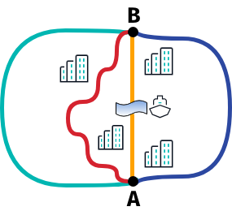
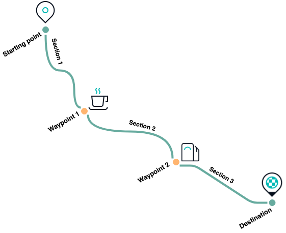
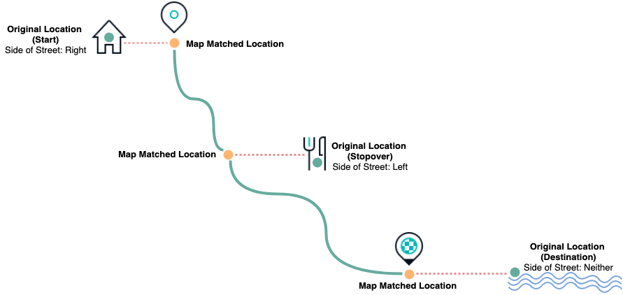
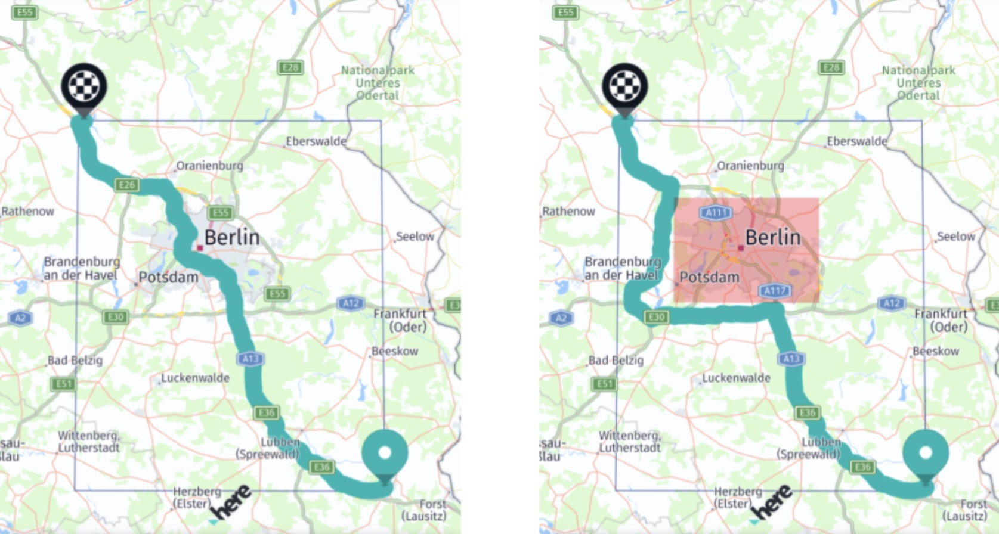

Add route options
Enhancing the functionality of your routing application involves offering a variety of RouteOptions tailored to different user needs. This section explores the diverse range of routing capabilities available, enabling you to create more personalized and efficient routing experiences.
Supported transport modes
The HERE SDK supports the following route types:
- Car route directions: Car routes use real-time and historical traffic information. Car routes follow roads that cars can enter and avoid areas where cars aren't allowed, such as pedestrian zones. Additionally, road restrictions like one-way streets and time-based road access like seasonal closures are taken into consideration.
- Taxi route directions: In addition to the features available for car routes, taxi routes take into account taxi-restricted lanes as well as lanes reserved for exclusive taxi access.
- Truck route directions: In addition to the features available for car routes, such routes take into account truck-related restrictions and other user-specified truck options.
- Routes for electric vehicles (EVs): EV routes can track the energy consumption of the vehicle. When EV routes are calculated, charging stations can be added to the route to ensure that the user reaches their destination without running out of energy. At the same time, the route is optimized for the shortest overall travel and charging time.
- Bus route directions with support for bus-only and bus-restricted lanes.
- Private bus route directions: For privately operated bus companies that can't use bus-only streets in cities but might have permissions to use them as passenger pick-up or drop-off points. Bus-only streets are used only when a waypoint is placed on such a street.
- Scooter route directions: A "scooter" is a low-power, two-wheeler vehicle, mainly used for in-city travel and transportation. Routes for scooters avoid highways and roads with travel speeds that exceed 60 km/h.
- Pedestrian route directions
- Bicycle route directions: Bicycle routing uses the pedestrian road network, where roads are considered to be open for cycling if either of the following conditions apply:
- The roads are open for both cars and pedestrians.
- They are pedestrian roadways in a park.
- The roads are closed for cycling, but the cyclist can dismount and carry the bicycle. This transition is represented by a change of
SectionTransportModefrom bicycle to pedestrian.
- Public transit routes: Based on WGS-84 compliant start and end points, such routes make use of all available transit modes in a given city or metropolitan area. The transit options are highly customizable using the
TransitRoutingEngine. - Ferries and car shuttle trains are used only for parts of a route if using them ensures following an optimal path. Changes in the used mode of transport are represented by a change of
SectionTransportMode.
Each route type is determined by one of the available RouteOptions such as CarOptions or TruckOptions.
You can calculate routes for all supported transport modes by using dedicated route options for each transport mode: these options can be set to the available overloads of the route engine's calculateRoute() method.
The following route options exist:
CarOptionsto calculate car routes:route.requestedTransportModeisTransportMode.car.TruckOptionsto calculate truck routes:route.requestedTransportModeisTransportMode.truck.PedestrianOptionsto calculate routes for pedestrians:route.requestedTransportModeisTransportMode.pedestrian.EVCarOptionsandEVTruckOptionsto calculate routes for electric vehicles:route.requestedTransportModeisTransportMode.carorTransportMode.truck.ScooterOptionsto calculate routes for scooters:route.requestedTransportModeisTransportMode.scooter.BicycleOptionsto calculate routes for bicycles:route.requestedTransportModeisTransportMode.bicycle.TaxiOptionsto calculate routes for taxis:route.requestedTransportModeisTransportMode.taxi.BusOptionsto calculate routes for buses:route.requestedTransportModeisTransportMode.bus.PrivateBusOptionsto calculate routes for private buses:route.requestedTransportModeisTransportMode.privateBus.TransitRouteOptionsto calculate routes for public mass transit (only available viaTransitRoutingEngine):route.requestedTransportModeisTransportMode.publicTransit.
The TransportMode is set by the routing engine after route calculation has been completed - while getRequestedTransportMode() determines the transport mode from the route options, each Section of a Route can have a different transport mode: route.getSectionTransportMode() provides the actual SectionTransportMode that has to be used for a particular section - in addition to the transport modes from above, it lists also transport modes such as ferry and carShuttleTrain.
By default, when passing only start and destination waypoints, the resulting route will contain only one route Section. Each route object can contain more route sections depending on the number of set waypoints and transport modes. Sections act as a route leg that break a route into several logical parts. Find more about this here.
Although the main transport mode is specified by the user before calculating the route, the final transport modes are set by the routing engine per Section.
Note
A Route can contain more than one SectionTransportMode. In such a case, the route will split into another Section to indicate the change of the transport mode. Basically, changing the mode of transport requires a stop on a journey, for example, when leaving the car to take a ferry. However, multimodal routing (or intermodal routing) is not supported: if a car route includes as destination a sightseeing spot in a park then the last waypoint will be map-matched to the last location before the park that is reachable by car - and the route will not contain a pedestrian section.
Such gaps can be detected by comparing the mapMatchedCoordinates with the originalCoordinates of a RoutePlace object: an application can decide to fill the distance between these two coordinates with a new route calculation using a suitable transport mode as fallback - such modal routes can be composed with many different options as some users may prefer taking a taxi or public transit instead of taking a walk. Note that the HERE SDK supports such modal routes only as separate requests, so the application needs to implement the fallback logic. As an alternative, consider to use the Intermodal Routing API.
Note that all geographic coordinates along a route are map-matched (also known as snap-to-road). If additional Waypoints are added, they will be also map-matched and their original coordinates can be compared with the map-matched location inside a RoutePlace that is indicating the beginning and the end of a Section.
All of the available route options allow you to further specify several parameters to optimize the route calculation to your needs.
Each of the above options contains a field that holds a common RouteOptions object. This option allows you to specify common options such as the number of route alternatives or the OptimizationMode to find the optimal route based on travel time and route length.
Note
By default, a route will be calculated using the fastest route mode.
Alternatively, you can change the algorithm. For example, if you want to reach your destination quickly and the length of the route is less important to you, select the fastest route mode via RouteOptions. Select shortest if you prefer a shorter route, and time is not so important.
To find the best route for you, the routing algorithm takes into account many different parameters. This does not mean the algorithm will always provide the absolute shortest or fastest route. For example, consider the following road network:

When you plan a trip from A to B, you may have the choice between four different roads. Let's assume that the green route represents a highway, then this road may be the fastest route, although it is longer than any of the other routes that would guide you through a city.
If you prefer to take the shortest route, the algorithm may favor the blue route, although the yellow and the red routes are shorter. Why is this so? The yellow road is the shortest route, of course, but it has to cross a river where a ferry has to be taken. This could be regarded by the algorithm as time-costly. As a result, it is possible to prefer the red or blue route instead of the yellow route, even though both are slightly longer.
Let's explore the other two options. When comparing the blue and the red route, the routing algorithm may recommend the blue route as the shortest although it is slightly longer than the red route: several turns are typically not beneficial to a driver. In this case, the red route contains more turns than the blue route, but the blue route may be the preferred route as it is only slightly longer. The routing algorithm penalizes turns and many other road properties, such as traffic lights or rail crossings that can slow a driver down.
Note
Along with the common routing options, the HERE SDK offers specialized options for the various supported transport modes, such as truck routing, where you can specify, for example, the dimensions of your truck via TruckSpecifications to find only the suitable routes where your truck would fit - considering parameters such as road width or tunnel height. Physical restrictions for car, electric vehicles and taxi can be set via CarSpecifications.
While the resulting routes are optimized based on certain criteria, there may be situations where you don't want to rely on that. Imagine a city trip through Berlin - finding the fastest or shortest route may not be an option if you want to experience many sightseeing spots the city has to offer. In such cases, setting additional waypoints may be a good idea. Find an example below.
Insert multiple waypoints
By default, when setting only start and destination waypoints, the resulting route will contain only one route Section. Each route object can contain more route sections depending on the number of set waypoints. Sections act as a route leg that break a route into several logical parts.
Waypoints are coordinates that can be set by the user to determine more sections or the shape the route (which can be useful if you want to make sure you cross a river with a ferry, for example).
Note that the online RoutingEngine supports only a limited number of waypoints of around 200 waypoints at most.
There can be two types of waypoints:
stopover: The default waypoint type. It is guaranteed that this point will be passed, therefore it appears in the list of maneuver instructions, and splits the route into separate route sections.passThrough: May not appear in the maneuver instructions list and is rather treated as a hint to shape the route, for example, as a result of a touch input. This type will not split the route into separate sections.
When creating a new Waypoint object, the stopover type is set by default - and this must be the type used for the first and the last waypoint. With just two waypoints acting as the start and destination, a route might look like below:
The RoutingEngine can handle multiple waypoints. The underlying algorithm will try to find the best path to connect all waypoints while respecting the order of the provided List - as well as the WaypointType. Each stopover-waypoint is passed between the starting location and the destination, which are the first and last item of the waypoint list respectively.
var startWaypoint = Waypoint.withDefaults(_startGeoCoordinates);
var destinationWaypoint = Waypoint.withDefaults(_destinationGeoCoordinates);
// Additional waypoints.
var waypoint1 = Waypoint.withDefaults(_createRandomGeoCoordinatesInViewport());
var waypoint2 = Waypoint.withDefaults(_createRandomGeoCoordinatesInViewport());
List<Waypoint> waypoints = [startWaypoint, waypoint1, waypoint2, destinationWaypoint];
_routingEngine.calculatEVRoute(waypoints, CarOptions(),
(RoutingError? routingError, List<here.Route>? routeList) async {
if (routingError == null) {
// When error is null, it is guaranteed that the list is not empty.
here.Route route = routeList!.first;
_showRouteDetails(route);
_showRouteOnMap(route);
_logRouteViolations(route);
} else {
var error = routingError.toString();
_showDialog('Error', 'Error while calculating a route: $error');
}
});
By adding two additional stopover-waypoints to the route using the code snippet above, we now have three route sections between the starting point and the destination as seen in the illustration below.
Note
The waypoints list order defines the order in which they are going to be passed along the route.

Additional information on the route - such as the estimated time it takes to travel to the destination and the total length of the route in meters - can be retrieved from the Route object as shown below:
// estimatedTravelTimeInSeconds includes traffic delay.
int estimatedTravelTimeInSeconds = route.duration.inSeconds;
int estimatedTrafficDelayInSeconds = route.trafficDelay.inSeconds;
int lengthInMeters = route.lengthInMeters;
Travel time and length are also available for each Section:
void _logRouteSectionDetails(here.Route route) {
DateFormat dateFormat = DateFormat().add_Hm();
for (int i = 0; i < route.sections.length; i++) {
Section section = route.sections.elementAt(i);
print("Route Section : " + (i + 1).toString());
print("Route Section Departure Time : " + dateFormat.format(section.departureLocationTime!.localTime));
print("Route Section Arrival Time : " + dateFormat.format(section.arrivalLocationTime!.localTime));
print("Route Section length : " + section.lengthInMeters.toString() + " m");
print("Route Section duration : " + section.duration.inSeconds.toString() + " s");
}
}
Without additional stopover-waypoints, the route will contain only one Section. If additional stopover-waypoints are provided, the route is separated into several route sections between each waypoint, as well as from the starting point to the first waypoint and from the last waypoint to the destination.
Note
An stopover-additional waypoint splits a route into separate sections and forces the route to pass this point and to generate a maneuver instruction for it.
Each Section contains the shape of the route in form of a GeoPolyline - represented as an array of coordinates where the first coordinate marks the starting point and the last one the destination.
This can be useful to visualize the route on the map by using, for example, map polylines in a different color for each Section. However, you can also get the entire polyline directly from the Route object.
Get map-matched waypoints
For calculating a route, you can use any desired location as start, destination or as intermediate stopover or passThrough waypoint - even if it is off-road. The resulting route may, however, not exactly pass through the specified waypoint. The routing algorithm will attempt to come as close to the specified coordinates as possible. To achieve this, the HERE SDK incorporates an advanced technique to find the nearest route segment for each set of coordinates - taking various parameters such as the specified transportation mode into account. This process is called map matching.
The route shape, however, consists only of map-matched waypoints.
For each Section of a Route you can access a RoutePlace at the beginning (departure place) of a section and at the end (arrival place). A Routeplace contains mapMatchedCoordinates and originalCoordinates that were passed as parameters. Both can be equal or different. If they are different, it means that the originalCoordinates do not lie on a road.
A RoutePlace contains more information that might be useful to assist you on your trip. For example, you can access chargingStation information along with chargeInKilowattHours - useful for electric vehicles (see below) - and the sideOfDestination of the original waypoint.

Imagine you are traveling along the route and as a stopover, you have specified a sightseeing spot which is off the road. When you reach the corresponding map matched waypoint - while staying on the road and heading towards your destination along the route, the sideOfDestination field will indicate whether your sightseeing spot (or restaurant as illustrated above) is on the left or on the right side of the street you are currently traveling on.
In some cases, a specified stopover may also be in front of you, above or even below your current location - in such a case, the sideOfDestination field will indicate the location as undefined - for example, if you are attempting to reach a lake and the road ends right in front of it.
Set a place as waypoint
A Place obtained from the SearchEngine may contain one or more access points. For example, a large warehouse can have multiple entrances, while the center of the warehouse may not be directly reachable. Note that access points are meant to be reachable by vehicles.
For routes it is recommended to navigate to one of the available access points (if any), whereas the sideOfStreetHint should be set to the geographic coordinates of the place. The list is empty when no access points are known or when the place is directly reachable.
List<GeoCoordinates> accessPoints = place.accessPoints;
// A Place always contains coordinates unless it is a suggestion.
Waypoint destinationWaypoint = Waypoint(place.geoCoordinates!);
if (!accessPoints.isEmpty) {
// Set the first access point of a place as route destination.
destinationWaypoint.coordinates = accessPoints.first;
// When reaching destination provide a hint on the actual location of the place.
destinationWaypoint.sideOfStreetHint = place.geoCoordinates;
}
A RoutePlace on the resulting Route object contains a RoutePlaceType which is set to accessPoint when a waypoint was set to an access point.
Take a look at the above illustration to see how the sideOfStreetHint will impact the SideOfDestination of a RoutePlace.
Note that if a place contains multiple access points, the user is responsible for selecting an appropriate one.
Set a waypoint as starting point
When starting a trip it may help to provide the RoutingEngine additional hints to choose the appropriate start direction - for example, to enforce necessary u-turns.
For example, you can specify the initial heading direction like this:
startWaypoint.headingInDegrees = location.bearingInDegrees;
If a user is moving, the bearing value can help to improve the route calculation. Note that the Location object contains a bearing value when it is taken from a positioning source and the user was already moving. Otherwise, it may not be set. Such a scenario may be more common during guidance, for example, when it is necessary to recalculate a route after a user has deviated from the proposed path.
Avoid road features
Use AvoidanceOptions to exclude tunnels, highways, low emission zones (LEZ), areas, ferries, toll costs and other road features, like harsh turns. You can pass a list of RoadFeatures, ZoneCategory, GeoBox, CountryCode elements and more.
RoadFeatures contains road specific features like tunnels or toll roads. For example, to exclude all highways from your journey, add controlledAccessHighway to the list of features.
AvoidanceOptions can be set together with other route options including localization and unit options to the options for the desired transport mode. For example, for car, use CarOptions, for trucks, TruckOptions and so on. These options are then read when calculating a route and in case of AvoidanceOptions, the engine will try to avoid the listed features.

If it is not possible to avoid the set options, for example, when a route starts in a blocked area, you can inspect such violations in the provided SectionNotice elements. If these are set, you can decide to reject such a route.
Get toll costs
You can get possible toll costs along the individual sections of a route.
This includes also information on payment details for vignettes such as window sticker or road taxes.
Note
For users of the OfflineRoutingEngine this is a beta release of this feature, so there could be a few bugs and unexpected behaviors. The OfflineRoutingEngine is available for editions such as the Navigate Edition. For users of the RoutingEngine the feature is stable.
The routeOptions.enableTolls flag must be set to get toll costs. It is set to false by default. When this flag is enabled, toll data is requested for toll applicable transport modes as defined in the API Reference.
Get toll costs via section.tolls which provides a PaymentMethod, TollFare & general Toll information.
void _logTollDetails(here.Route route) {
for (Section section in route.sections) {
// The spans that make up the polyline along which tolls are required or
// where toll booths are located.
List<Span> spans = section.spans;
List<Toll> tolls = section.tolls;
if (tolls.isNotEmpty) {
print("Attention: This route may require tolls to be paid.");
}
for (Toll toll in tolls) {
print("Toll information valid for this list of spans:");
print("Toll systems: " + toll.tollSystems.join(', '));
print("Toll country code (ISO-3166-1 alpha-3): " + toll.countryCode);
print("Toll fare information: ");
for (TollFare tollFare in toll.fares) {
// A list of possible toll fares which may depend on time of day, payment method and
// vehicle characteristics. For further details please consult the local
// authorities.
print("Toll price: " + tollFare.price.toString() + " " + tollFare.currency);
for (PaymentMethod paymentMethod in tollFare.paymentMethods) {
print("Accepted payment methods for this price: " + paymentMethod.toString());
}
}
}
}
}
Get public transit routes
Use the TransitRoutingEngine to calculate public transit routes from A to B with a number of waypoints in between. You can find a "public_transit_app" example on GitHub that shows how to do this.
Get truck routes
The HERE SDK supports different transport modes (see above) for route calculation. Similar to the example above that shows how to calculate a route optimized for cars, you can also calculate routes for other transport types such as trucks.
While you can already get a route optimized for trucks by setting the default options, there are many more options available to find the best routes for a truck.
For example, TruckOptions contains additional fields such as TruckSpecifications to specify the dimensions of your truck, and more, that can be optionally applied to take the vehicle weight and other parameters into account.